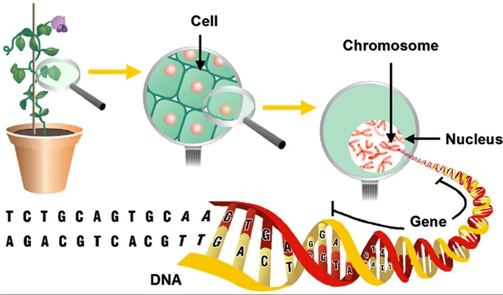

What is Biotechnology in the field of agriculture?
Biotechnology is the use of living organisms or their parts to develop products or processes for human use. In agriculture, biotechnology is an essential tool for improving crop production, animal health, and food quality. Biotechnology in agriculture involves the use of genetic engineering techniques to create new crop varieties that have desirable traits, such as resistance to pests and diseases, increased yield, and improved nutritional value.
The use of biotechnology in agriculture has been growing rapidly in recent years, driven by the need to meet the increasing demand for food in a sustainable way. Biotechnology can help address some of the challenges facing modern agriculture, such as climate change, food insecurity, and the need for more efficient production methods.
This technology has the potential to revolutionize agriculture by providing new tools to help farmers grow crops more efficiently, using fewer resources, and with less impact on the environment. However, biotechnology in agriculture is not without controversy, with concerns over safety, ethical considerations, and the potential impact on biodiversity and ecosystems.
Importance of Biotechnology

Some Ways Biotechnology can help improve agriculture
Improved crop production: Biotechnology can help develop crops with desirable traits, such as resistance to pests and diseases, drought tolerance, and increased yield. This can help farmers produce more food using fewer resources, making agriculture more efficient and sustainable.